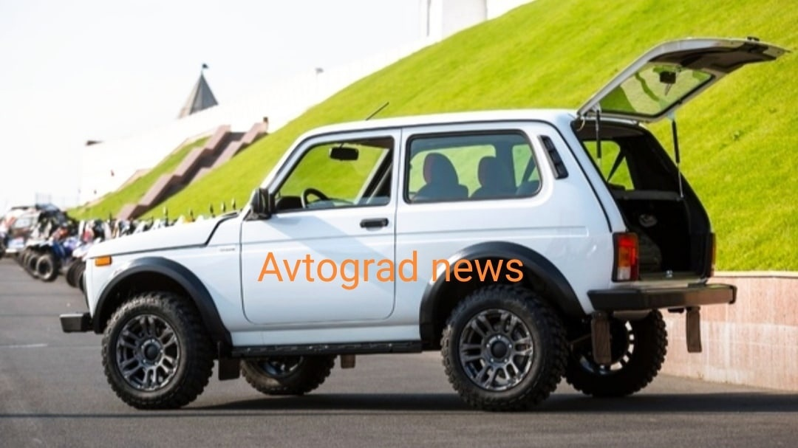
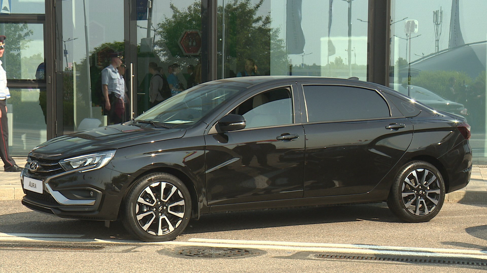
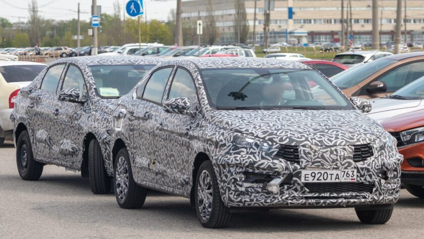
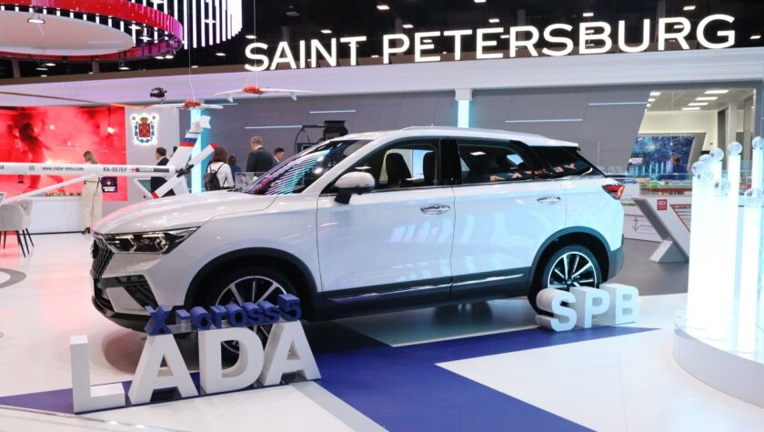
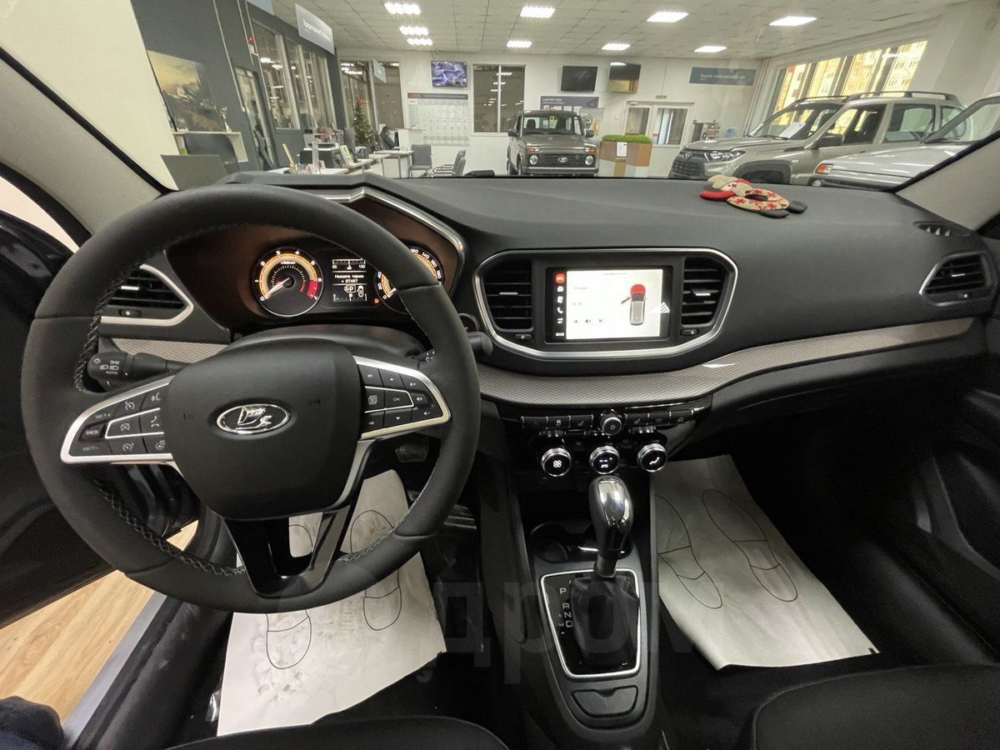
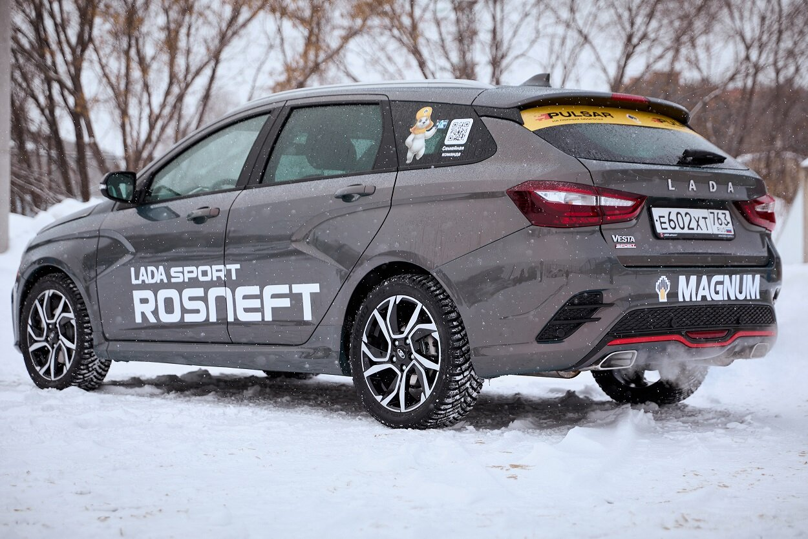
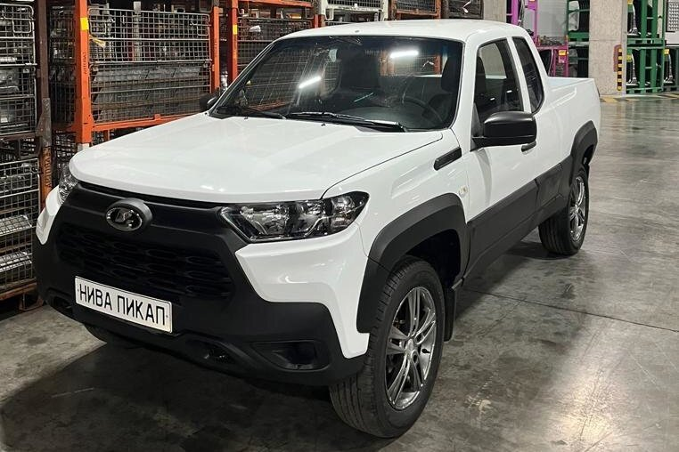

Одним из самых ожидаемых автомобилей еще можно назвать –
Ладу Ниву Спорт: это новая модификация на базе Нивы Легенд,
но с более мощным мотором (предполагается, что это будет 1.8 122 л.с),
немного измененной внешностью и переработанной подвеской.
Почти готова и удлиненная Lada Aura на базе
Весты, которая в основном предназначена для чиновников, но недавно стало известно,
что в свободной продаже новинка тоже появится в 2024 году.


Летом 2024 года состоится полноценная премьера новой Лады Искры, проект которой все называли
“Новая Гранта XJO” или “Гранта-2”. В продаже автомобиль появится в 2025 году.
Под именем Lada Iskra будет выпускаться целое семейство автомобилей в кузове седан,
универсал и кросс-универсал, т.е по аналогии с Вестой и Грантой.
Внезапно, АвтоВАЗ под брендом Лада показал кроссовер c названием X-Cross
5, впрочем, который оказался китайским паркетником
FAW Bestune T77, отличия лишь в шильдике на решетке радиатора.
Производить новый кроссовер Lada будут на бывшем заводе Nissan Motor в
Санкт-Петербурге, где раньше сходили с конвейера японские автомобили: Nissan Qashqai,
X-Trail и Murano. Ожидается, что выпуск новых-старых кроссоверов будет налажен до конца 2023-года.


Lada Vesta NG (версия с автоматической КПП)
В июне 2023 года состоялся старт продаж долгожданной Lada Vesta NG
в обновленном версии, которая должна была выйти на год раньше, но
из-за февральских событий 2022-го, выпуск новой модели перенесли.
Все же на старте продаж Lada Vesta NG вышла в урезанном виде и исключительно
с механической коробкой передач. Ведь прежний японский вариатор
Jatco из-за санкций больше не поставляется в Россию.
Обновленная Lada Vesta Sport NG
Помимо Гранты Спорт, в 2024 году появится обновленная Lada Vesta NG Sport.
У которой под капотом ожидается форсированный мотор 1.8 (145 л.с),
а также шестиступенчатая “механика” (!), тогда как ранее Веста
Sport была с пятиступенчатой КПП. Но опять же, это пока еще не официальная информация.
Также впервые, Lada Vesta Sport выйдет в кузове SW (универсал), тогда как ранее такая модификация было только у седана.
Выход новой Лады Весты Спорт ожидается в течение 2024 года.


Российско-японская компания «Альфа Аутоматив Техноложиз» (ААТ),
занимающаяся штамповкой кузовных деталей для Лады и тульского завода Haval
(а ранее для Renault) создала перспективный прототип пикапа на базе Lada Niva Travel.